3.18 Separation of Variables and Sturm–Liouville#
Notebook overview#
This notebook is deliberately last in the volume, and it faces backwards. Every other chapter set something up for the ones after it; this one goes back and settles three accounts the volume left open.
Here they are, in the order we incurred them. In §3.4 we relaxed a potential onto a square box and graded the result against an exact Fourier series that the Setup cell announced, in as many words, was “quoted from the theory above rather than derived here”. In §3.5 we expanded a far field in Legendre polynomials and spherical harmonics, and wrote of their origin that it “is separation of variables of Laplace’s equation in spherical coordinates, a Sturm–Liouville problem; we treat that as deferred”. In §3.9 we computed the resonances of a microwave cavity from a standing-wave formula marked, again in the Setup cell, “read off, not derived here”. Three notebooks, three coordinate systems, three answers we used with confidence and never produced.
I like that the volume was honest about this at the time, and I like even better that the fix is a single idea rather than three. Separate Laplace’s equation in Cartesian coordinates and the ordinary differential equation left behind in \(x\) is \(X'' = -k^2 X\), whose solutions on a segment with grounded ends are sines and whose separation constants are \((n\pi)^2\). Separate it in spherical coordinates and the polar equation is Legendre’s, whose regular solutions are \(P_l\) and whose separation constants are \(l(l+1)\). Separate it in cylindrical coordinates and the radial equation is Bessel’s, whose regular solutions are \(J_m\) and whose separation constants are the squared zeros \(j_{m,n}^2\). Those three ordinary differential equations look nothing alike, and they are the same equation: a Sturm–Liouville problem \(-(p u')' + q u = \lambda\, w\, u\), differing only in the coefficient functions \(p\), \(q\) and the weight \(w\). That is not a slogan here. We build one discretization of that operator, hand it three sets of coefficient functions, and read three families of special functions off the same eigensolver.
The notebook could not have come earlier. Separation of variables solves Laplace’s equation, and Laplace’s equation is where §3.4 starts, so there was no place to put this before the volume had a boundary-value problem worth solving. Placed here it can do something a chapter written earlier could not: grade its derivations against the volume’s own code. The series we derive in Exercise 3 is fed to the relaxation solver of §3.4 and to the sparse direct solver beside it; the multipole moments we derive in Exercise 6 are checked against the exact Coulomb sum; the cavity formula we derive in Exercise 7 is checked against the transcribed one §3.9 used. Everything closes.
Everything is in SI units (\(\varepsilon_0 = 8.854\times10^{-12}\,\)F/m, \(c = 1/\sqrt{\mu_0\varepsilon_0}\)), except the model box problem of §3.4, which lives on the dimensionless unit square with its top edge at \(V_0 = 1\,\)V. The objects here are static fields and converging series: nothing moves, so every figure is a still.
How to read the checks. Each exercise ends with a
validatecall against an independent fact: a product solution annihilated by the discrete Laplacian, eigenvalues landing on \((n\pi)^2\) and \(l(l+1)\) and \(j_{m,n}^2\), a derived series reproducing a quoted one, a five-point solve converging at second order against it, multipole moments matching \(k q d^{\,l}\), a Gibbs overshoot equal to \((2/\pi)\,\mathrm{Si}(\pi)\). A ✓ is strong evidence; a ✗ is a prompt to locate the discrepancy, not a verdict.
Scope. A working derivation of the three results this volume used, not a course in special functions. See Arfken, Weber & Harris [AWH13] (the Sturm–Liouville chapter, and the standard treatment of Legendre and Bessel functions); Griffiths, Introduction to Electrodynamics [Gri17] (ch. 3); Jackson [Jac98] (ch. 3); Nolting, Theoretical Physics 3 [Nol16]; and Press et al., Numerical Recipes [PTVF07] for the numerical handling of special functions.
Theory in brief#
The ansatz, and the constant it produces#
Laplace’s equation \(\nabla^2\varphi = 0\) Eq. 205 couples the coordinates through a sum of second derivatives. The separation ansatz is the guess that a solution can be built as a product of single-variable functions. In two Cartesian dimensions,
The left side depends on \(x\) alone and the right on \(y\) alone, so both must equal the same constant, and the partial differential equation splits into two ordinary ones,
with \(k^2\) the separation constant. The opposite signs are forced: they are what makes the two curvatures cancel. Choose the same sign in both and the product solves the Helmholtz equation \(\nabla^2\psi = -k_c^2\psi\) instead, which is exactly the guided-mode problem of §3.9 rather than the boundary-value problem of §3.4.
The ansatz is not universal. It works when two conditions hold: the Laplacian separates in the coordinate system (true for Cartesian, spherical, cylindrical, and eight further classical systems), and the boundary is a union of coordinate surfaces, so that a boundary condition constrains one factor at a time. A square in Cartesian coordinates qualifies; a sphere in spherical coordinates qualifies; a triangle in Cartesian coordinates does not, which is precisely why §3.4 needed relaxation and §3.9 needed a sparse eigensolver for the L-shaped guide.
The separation constant is an eigenvalue#
Equation Eq. 316 alone does not pin \(k\) down. The boundary does. On \(0 \le x \le 1\) with \(X(0)=X(1)=0\), the only non-trivial solutions of \(X''=-k^2X\) are \(X_n = \sin(n\pi x)\) with \(k_n = n\pi\): a differential operator, a homogeneous boundary condition, and a discrete spectrum. That is an eigenvalue problem, and recognising it as one is the whole content of this notebook. The counterpart for a matrix is §0.5: a real symmetric \(A\) has real eigenvalues and an orthogonal eigenbasis. Everything below is that theorem, said for a differential operator.
Sturm–Liouville form#
A second-order linear operator is in Sturm–Liouville form when it is written
with \(\lambda\) the eigenvalue and \(w\) the weight function. The point of the form is that \(\mathcal{L}\) is then self-adjoint: for functions obeying the boundary conditions, \(\int_a^b (\mathcal{L}u)\,v\,dx = \int_a^b u\,(\mathcal{L}v)\,dx\), which follows from integrating the derivative term by parts twice, the boundary terms cancelling. Self-adjointness is to \(\mathcal{L}\) what symmetry is to a matrix, and it buys the same three guarantees (Arfken, Weber & Harris [AWH13] give the proofs):
Real eigenvalues. \(\lambda_1 < \lambda_2 < \cdots \to \infty\), all real.
Orthogonality with respect to the weight. Eigenfunctions of distinct eigenvalues satisfy
(318)#\[\int_a^b u_m(x)\,u_n(x)\,w(x)\,dx = 0 \qquad (m \ne n).\]The weight \(w\) is not decoration. Drop it and the integral is simply not zero.
Completeness. The \(\{u_n\}\) span the relevant function space, so any reasonable \(f\) has an expansion whose coefficients are read off by one integral each,
(319)#\[f(x) = \sum_n c_n u_n(x) , \qquad c_n = \frac{\int_a^b f\,u_n\,w\,dx}{\int_a^b u_n^2\,w\,dx} .\]
Equation Eq. 319 is the engine of the whole subject. It is why §3.5 could obtain a multipole moment by one projection integral, and it is the statement whose matrix version, \(\mathbf c = Q^{\mathsf T}\mathbf f\) for an orthogonal \(Q\), is §0.5.
The three cases this volume used#
Separating \(\nabla^2\varphi = 0\) in the three standard coordinate systems produces three Sturm–Liouville problems that differ only in \((p, q, w)\) and the interval:
geometry |
interval |
\(p\) |
\(q\) |
\(w\) |
\(\lambda\) |
eigenfunctions |
|---|---|---|---|---|---|---|
Cartesian (§3.4) |
\([0,1]\) |
\(1\) |
\(0\) |
\(1\) |
\((n\pi)^2\) |
\(\sin(n\pi x)\) |
spherical, polar angle (§3.5) |
\([-1,1]\) |
\(1-x^2\) |
\(0\) |
\(1\) |
\(l(l+1)\) |
\(P_l(x)\) |
cylindrical, radial (§3.9) |
\([0,a]\) |
\(r\) |
\(m^2/r\) |
\(r\) |
\(k^2\) |
\(J_m(k r)\) |
Cartesian. With three grounded edges and the top edge of the unit square held at \(V_0\), the admissible factors are \(X_n = \sin(n\pi x)\) and \(Y_n \propto \sinh(n\pi y)\) (the branch that vanishes at \(y=0\)), so
and \(c_n = 0\) for even \(n\). That is the series §3.4 quoted.
Spherical. With azimuthal symmetry, \(\varphi = R(r)\,\Theta(\theta)\) splits \(\nabla^2\varphi=0\) into a radial equation and, writing \(x=\cos\theta\), Legendre’s equation in Sturm–Liouville form,
Here \(p\) vanishes at \(x = \pm 1\), the two poles, which makes the problem singular: no boundary condition is imposed there, and the requirement that \(\Theta\) merely stay finite is what forces \(l\) to be a non-negative integer. The radial factor obeys
two power laws, one growing and one decaying. Outside a bounded charge distribution the potential must vanish at infinity, so \(A=0\) and only the decaying branch survives:
That is the multipole expansion Eq. 217 of §3.5, obtained there from the generating function Eq. 216 and obtained here from the boundary conditions. The orthogonality relation Eq. 218 that §3.5 attributed to Sturm–Liouville theory is Eq. 318 with \(w=1\), and \(\int_{-1}^{1} P_l^2\,dx = 2/(2l+1)\) fixes the normalisation. Dropping azimuthal symmetry replaces \(P_l(\cos\theta)\) by the spherical harmonics \(Y_l^m\) Eq. 219, the same eigenvalue \(l(l+1)\) now carrying a second index.
Cylindrical. Separating the Helmholtz equation \(\nabla_T^2\psi = -k_c^2\psi\) on a disc gives \(\psi = R(r)e^{im\phi}\) with Bessel’s equation, again in Sturm–Liouville form,
The weight is \(w(r)=r\), which is just the polar area element, and it is the clearest case in the course of a weight that cannot be ignored. Regularity at \(r=0\) (where \(p\) vanishes again) selects \(J_m\) over \(Y_m\), and the wall condition \(R(a)=0\) quantizes \(k\) to \(k_{mn} = j_{m,n}/a\) with \(j_{m,n}\) the \(n\)-th zero of \(J_m\).
The rectangular cavity. Separating the same Helmholtz equation in a box \(a\times b\times d\) gives one Cartesian factor per axis, each contributing its own separation constant, and the constants simply add:
How the expansion converges#
Completeness promises convergence, but not uniform convergence. Where the boundary data has a jump, the partial sums of an eigenfunction expansion overshoot it by a fixed fraction that never shrinks, only narrows: the Gibbs phenomenon. For a jump of size \(\Delta\), the partial sums approach
above the midpoint of the jump, an overshoot of about \(8.95\%\) of \(\Delta\). The constant is a property of the jump, not of the basis, so it appears identically in a Legendre expansion. The corners of the box of §3.4, where the live edge meets a grounded one, are exactly such jumps, and the “corner mismatch” that notebook excluded from its comparison is this effect. Away from a discontinuity the picture is the opposite and much happier: in the box interior the \(n\)-th term of Eq. 320 carries a factor \(e^{-n\pi(1-y)}\), so truncation error dies geometrically and a handful of terms is machine-accurate.
Setup#
The Setup of a retrospective notebook is an unusual object: almost everything in it was written in an earlier chapter, because the earlier chapters are the raw material. It holds the constants and colours; the box geometry, the five-point Laplacian, the Jacobi relaxation and the sparse direct solve of §3.4, restated so the derivations below can be graded against the volume’s own solvers; the closed-form box series exactly as §3.4 quoted it; and the cavity formula exactly as §3.9 transcribed it. Those last two are the targets: Exercises 3 and 7 derive them, and the copies here exist only so the derivation can be checked against the text it must reproduce. The machinery this notebook teaches is not here at all: the Sturm–Liouville discretization is built in Exercise 2, the projection integral of Eq. 319 in Exercise 3, and the series assembly beside it.
The Setup below holds this notebook’s data and instruments — nothing you are asked to build. It is collapsed so the building stays yours; expand it whenever you want the details.
Exercise 1 — The ansatz, and why the signs are forced#
Everything starts with the guess Eq. 315: look for a solution of \(\nabla^2\varphi=0\) that is a product \(X(x)\,Y(y)\). Dividing the resulting equation by \(XY\) isolates a function of \(x\) against a function of \(y\), and two functions of independent variables can agree only by both being constant. The pair Eq. 316 follows, with \(X''=-k^2X\) oscillating and \(Y''=+k^2Y\) growing. The opposite signs are not a convention: they are the arithmetic of \(\nabla^2=0\), since the two curvatures have to cancel. Take the same sign in both factors and the same product solves \(\nabla^2\psi=-k_c^2\psi\) with \(k_c^2 = 2k^2\), which is the transverse Helmholtz problem of §3.9, not the Laplace problem of §3.4. The two families this volume treated as separate topics differ by one sign in the separation constant.
Where the ansatz works is a question about the boundary, not about the equation (Fig. 334). A separated solution constrains one factor at a time, so each boundary piece must be a surface on which a single coordinate is constant. The unit square qualifies, and a wall cutting diagonally across it does not, which is why §3.4 had to relax and §3.9 had to diagonalize a sparse matrix for the L-shaped guide.
The concrete objects here are the normalised product modes
\(\varphi_n(x,y)=\sin(n\pi x)\,\sinh(n\pi y)/\sinh(n\pi)\) for \(n=1,2,3\) on a
\(201\times201\) uniform grid over \([0,1]^2\), and their same-sign partners
\(\psi_n(x,y)=\sin(n\pi x)\sin(n\pi y)\) on the same grid. Evaluate the \(\sinh\) ratio in
the overflow-safe exponential form \(e^{a(y-1)}(1-e^{-2ay})/(1-e^{-2a})\) with
\(a=n\pi\): written literally as \(\sinh(a y)/\sinh(a)\) it is a ratio of two numbers that
overflow float64 near \(a \approx 710\), and Exercise 3 needs terms far beyond that.
Part a) Build \(\varphi_n\) for \(n=1,2,3\) and apply laplacian_5pt (the
§3.4 five-point stencil Eq. 207, restated in Setup)
on the interior. Report the largest \(|\nabla^2\varphi_n|\) relative to the field’s own
curvature scale \((n\pi)^2\max|\varphi_n|\); it should sit at the \(10^{-4}\) level, the
stencil’s \(O(h^2)\) truncation and nothing else.
Part b) Confirm the split itself, factor by factor: differentiate
\(X_n(x)=\sin(n\pi x)\) and \(Y_n(y)=\sinh(n\pi y)/\sinh(n\pi)\) twice with
numpy.gradient applied to its own output, and check \(X_n''+(n\pi)^2X_n=0\) and
\(Y_n''-(n\pi)^2Y_n=0\) separately (drop the five outermost samples, where the one-sided
difference is only first-order accurate). The same constant \((n\pi)^2\) appears in both
with opposite sign: that is Eq. 316 on the screen.
Part c) Flip the sign in the second factor: apply the same stencil to \(\psi_n=\sin(n\pi x)\sin(n\pi y)\) and compare against \(-2(n\pi)^2\psi_n\). The product now solves Helmholtz with \(k_c^2=2(n\pi)^2\), which for \(n=1\) on the unit square is precisely the TM\(_{11}\) cutoff Eq. 239 of a square guide.
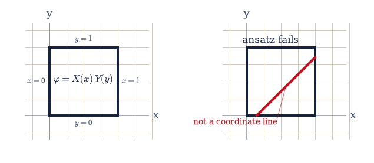
Fig. 334 When the separation ansatz applies. Left: the unit square, whose four boundary segments each lie on a coordinate line (\(x=0\), \(x=1\), \(y=0\), \(y=1\)), so a boundary condition constrains one factor of \(\varphi=X(x)Y(y)\) at a time and the ansatz closes. Right: the same region cut by a diagonal wall, which is not a level set of \(x\) or of \(y\); a condition imposed there mixes both factors, the ansatz fails, and only a grid solver such as the relaxation of §3.4 will do.#
n=1: |∇²φ|/[(nπ)²max|φ|] = 4.05e-05 factor split residual = 8.22e-05 |∇²ψ + 2(nπ)²ψ|/|2(nπ)²ψ| = 2.06e-05
n=2: |∇²φ|/[(nπ)²max|φ|] = 1.59e-04 factor split residual = 3.29e-04 |∇²ψ + 2(nπ)²ψ|/|2(nπ)²ψ| = 8.22e-05
n=3: |∇²φ|/[(nπ)²max|φ|] = 3.53e-04 factor split residual = 7.40e-04 |∇²ψ + 2(nπ)²ψ|/|2(nπ)²ψ| = 1.85e-04
same-sign product ψ₁ solves Helmholtz with k_c² = 2π² = 19.7392, the TM₁₁ cutoff of a unit square guide
Validation 1#
✓ the product ansatz splits Laplace's equation into two ODEs sharing one constant (opposite signs), and the same-sign product solves Helmholtz instead [max relative residuals: Laplace 3.5e-04, split 7.4e-04, Helmholtz 1.9e-04]
True
Exercise 2 — The separation constant is an eigenvalue#
Equation Eq. 316 says \(X''=-k^2X\) but says nothing about \(k\). The boundary does. On \(0\le x\le 1\) with \(X(0)=X(1)=0\) the only non-trivial solutions are \(X_n=\sin(n\pi x)\) with \(k_n^2=(n\pi)^2\), so the separation constant is an eigenvalue of a differential operator, and the modes are its eigenfunctions. Every case in this notebook is that same statement with different coefficient functions, so we build the machine once, in Sturm–Liouville form Eq. 317, and reuse it in all three coordinate systems.
The discretization has to preserve self-adjointness, because that is where the guarantees come from, so we discretize the operator in conservative (finite-volume) form rather than expanding the derivatives. Split \([a,b]\) into \(n\) cells of width \(h=(b-a)/n\), put the unknowns at the cell centres \(x_i=a+(i+\tfrac12)h\), and evaluate \(p\) at the cell faces \(x_{i\pm 1/2}\). The flux \(p\,u'\) across a face is approximated by \(p_{i+1/2}(u_{i+1}-u_i)/h\), and \(-(pu')'\) at cell \(i\) is the difference of the fluxes bounding it, divided by \(h\):
Because face \(i+\tfrac12\) contributes \(-p_{i+1/2}/h^2\) to both the \((i,i{+}1)\) and the
\((i{+}1,i)\) entry, the matrix comes out symmetric by construction: self-adjointness
survives discretization exactly, not approximately. The eigenvalue problem is then
\(A\mathbf u = \lambda B\mathbf u\) with \(B=\mathrm{diag}(w(x_i))\), a symmetric-definite
generalized problem for scipy.linalg.eigh(A, B), whose eigenvectors come back
\(B\)-orthonormal: \(\mathbf u_m^{\mathsf T}B\,\mathbf u_n=\delta_{mn}\), the discrete image
of the weighted orthogonality Eq. 318.
The two endpoint treatments the notebook needs are:
Dirichlet (\(u=0\) on the boundary). The boundary sits half a cell outside the first centre, so the flux there is \(p_{\text{face}}(0-u_0)/(h/2)\) and the diagonal gains \(+2p_{\text{face}}/h^2\).
Natural, used where \(p\) vanishes at the endpoint. Then the flux \(p u'\) is zero there for any bounded \(u\), so nothing is added at all, and no condition is imposed. This is the singular case that will quantize \(l\) in Exercise 5 and select \(J_m\) over \(Y_m\) in Exercise 8, and it needs no special code: leaving the term out is the regularity requirement.
This is the machine, and its acceptance test is the case whose answer we already know.
Part a) Write sl_eigenproblem(p, q, w, a, b, n, bc), returning the cell centres
\(x_i\), the symmetric matrix \(A\) of the display above, and the diagonal weight matrix
\(B=\mathrm{diag}(w(x_i))\), with p, q, w passed as callables (p evaluated on the
\(n+1\) faces, q and w on the \(n\) centres) and bc a pair drawn from
"dirichlet"/"natural". Write this one yourself — the implementation is the
lesson: this single function is the notebook’s entire method, and every special
function below comes out of it.
Part b) Its acceptance test is the Cartesian case \(p=1\), \(q=0\), \(w=1\) on \([0,1]\)
with Dirichlet ends and \(n=400\) cells. Solve with scipy.linalg.eigh(A, B) and compare
the five lowest eigenvalues against \((n\pi)^2 = 9.8696,\,39.478,\,88.826,\,157.91,\,
246.74\). Confirm first that \(A\) is symmetric to the last bit, since that is the
property doing the work.
Part c) Compare the five lowest eigenvectors, each normalised to unit peak, against \(\sin(n\pi x_i)\) normalised the same way, fixing the arbitrary sign by the sign of their inner product (Fig. 335).
Part d) Verify the weighted orthogonality Eq. 318 in its discrete form:
form \(V^{\mathsf T}BV\) for the first six eigenvectors with the @ matrix product and
check it against the \(6\times6\) identity with numpy.allclose.
A symmetric to 0.0e+00 (exactly 0 means bit-for-bit)
n=1: λ = 9.86955 vs (nπ)² = 9.86960 rel. err 5.1e-06 max |eigvec − sin(nπx)| = 1.3e-13
n=2: λ = 39.47761 vs (nπ)² = 39.47842 rel. err 2.1e-05 max |eigvec − sin(nπx)| = 1.8e-13
n=3: λ = 88.82233 vs (nπ)² = 88.82644 rel. err 4.6e-05 max |eigvec − sin(nπx)| = 8.5e-14
n=4: λ = 157.90068 vs (nπ)² = 157.91367 rel. err 8.2e-05 max |eigvec − sin(nπx)| = 9.4e-14
n=5: λ = 246.70840 vs (nπ)² = 246.74011 rel. err 1.3e-04 max |eigvec − sin(nπx)| = 6.1e-14
max |VᵀBV − I| over the first six modes: 1.3e-15
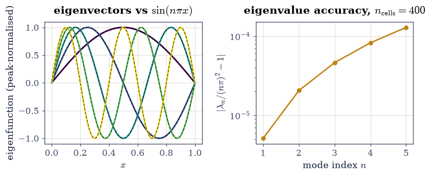
Fig. 335 The Cartesian Sturm–Liouville problem \(-u''=\lambda u\) on \([0,1]\) with \(u(0)=u(1)=0\), solved as a matrix eigenproblem. Left: the five lowest eigenvectors returned by scipy.linalg.eigh (solid, peak-normalised) on the analytic eigenfunctions \(\sin(n\pi x)\) (dashed), with \(n\) counting the half-waves. Right: the relative error of the computed eigenvalue against \((n\pi)^2\), growing with mode index because a fixed grid of 400 cells resolves a short-wavelength mode less well than a long one.#
Validation 2#
✓ the Sturm–Liouville machine returns a symmetric operator whose eigenvalues are (nπ)², whose eigenvectors are sin(nπx), and whose eigenbasis is w-orthonormal [symmetry 0.0e+00, worst λ error 1.3e-04, worst mode deviation 1.8e-13, |VᵀBV − I| = 1.3e-15]
True
Exercise 3 — Deriving the box series#
The first of the volume’s three open loops. The model problem of §3.4 is the unit square with three grounded edges and the top edge held at \(V_0=1\,\)V (Fig. 336), and its Setup cell handed over the exact answer with the note that it was “quoted from the theory above rather than derived here”. We derive it now, and every step is one of the results already in hand.
The boundary is four coordinate lines, so the ansatz applies. The condition \(\varphi(0,y)=\varphi(1,y)=0\) holds for every \(y\), so it is a condition on \(X\) alone, and it is exactly the eigenproblem of Exercise 2: \(X_n=\sin(n\pi x)\) with separation constant \((n\pi)^2\). With that constant fixed, \(Y''=+(n\pi)^2Y\) has solutions \(e^{\pm n\pi y}\), and \(\varphi(x,0)=0\) selects the combination vanishing at \(y=0\), namely \(\sinh(n\pi y)\); dividing by \(\sinh(n\pi)\) normalises it to \(1\) on the top edge. No single mode can meet the fourth condition, but Laplace’s equation is linear, so we superpose them,
and the top edge becomes \(\varphi(x,1)=\sum_n c_n\sin(n\pi x) = V_0\). That is an expansion of the constant function \(V_0\) in the eigenbasis, so completeness Eq. 319 supplies the coefficients with one integral each, using the Cartesian weight \(w=1\) and \(\int_0^1\sin^2(n\pi x)\,dx=\tfrac12\):
which completes Eq. 320. The even modes drop out because \(\sin(n\pi x)\) for even \(n\) is antisymmetric about \(x=\tfrac12\) while the top-edge data is symmetric, so their overlap cancels: a symmetry statement, visible in the coefficient spectrum below.
The projection Eq. 319 is the machinery of the rest of the notebook, so we
write it once in the general weighted form and reuse it for Legendre in Exercise 6 and
for Bessel in Exercise 8. Both integrals are taken with numpy.trapezoid on a uniform
grid of \(20\,001\) samples of \(x\in[0,1]\), fine enough that the highest mode used here,
\(n=159\), still gets over a hundred samples per half-wave.
Part a) Write sl_project(f_vals, u_vals, x, w=None), the coefficient of
Eq. 319: the ratio of \(\int f\,u\,w\,dx\) to \(\int u^2 w\,dx\), both by
numpy.trapezoid over the sample points x, with w=None meaning the unit weight.
Write this one yourself — the implementation is the lesson: this one ratio is what
“expand in an orthogonal basis” means, and it is the only thing the three coordinate
systems below have in common.
Part b) Project the top-edge data \(f(x)=V_0=1\,\)V onto \(u_n=\sin(n\pi x)\) for \(n=1,\dots,159\) and compare with the closed form above: \(4V_0/(n\pi)\) for odd \(n\), exactly \(0\) for even \(n\). Report the largest deviation over all \(159\) coefficients.
Part c) Write box_potential(x, y, coeffs), which assembles Eq. 320 on a
numpy.meshgrid of the unit square from a list of coefficients, using the
overflow-safe sinh_ratio of Exercise 1 for the \(y\) factor and skipping zero
coefficients. Write this one yourself — the implementation is the lesson: this is
where the eigenfunctions, the coefficients, and the growing radial factor become a
field.
Part d) Evaluate it on the \(40\times40\) grid of §3.4 twice,
once with the closed-form coefficients and once with the projected ones, and compare
both against box_series from Setup, which is the text
§3.4 quoted. The closed-form route should agree to the last
bit, since the derivation lands on that expression exactly; the projected route carries
the quadrature error of Part b. Also check the derived field against its own boundary
conditions, taking numpy.max of the absolute value along each boundary row and
column of the assembled array: \(|\varphi| \le 10^{-12}\) on the three grounded edges,
which every term satisfies individually, and \(|\varphi - V_0| \le 10^{-2}\) along the
top edge for \(0.1\le x\le 0.9\). That second tolerance is deliberately loose. The top edge is the one
place the series must reproduce a discontinuous datum, and truncating at \(159\) terms
leaves a ripple there that no care in the coefficients removes; Exercise 9 measures it
and names it (Fig. 337).
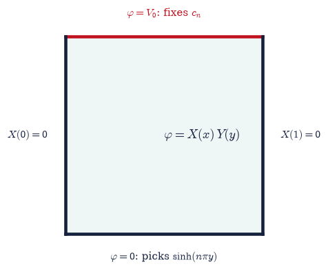
Fig. 336 The model boundary-value problem of §3.4, restated for derivation: the unit square with three grounded edges at \(0\,\)V and the top edge held at \(V_0=1\,\)V. Each edge lies on a coordinate line, so the separated form \(\varphi=X(x)Y(y)\) applies; the two side conditions fix \(X_n=\sin(n\pi x)\) with separation constant \((n\pi)^2\), the bottom condition fixes \(Y_n\propto\sinh(n\pi y)\), and the top condition fixes the superposition coefficients \(c_n\).#
max |c_n(projected) − 4V₀/nπ| over n = 1…159: 4.16e-07
c₁ = 1.273240 V, c₂ = 0.000000 V, c₃ = 0.424413 V (4V₀/nπ, odd only)
max |derived − §3.4 box_series| (closed-form coefficients): 0.00e+00
max |derived − §3.4 box_series| (projected coefficients): 2.41e-06
grounded edges: max |φ| = 1.29e-14 V
top edge, 0.1 ≤ x ≤ 0.9: max |φ − V₀| = 5.81e-03 V
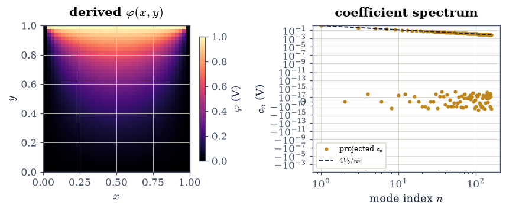
Fig. 337 The derived separated solution of the §3.4 box. Left: the potential \(\varphi(x,y)\) on the unit square, assembled from Eq. eq-sov-box with the coefficients projected in Part b; the field is \(V_0=1\,\)V along the top edge and \(0\) on the other three, and the two top corners are where the boundary data jumps. Right: the coefficient spectrum \(c_n\) (amber) against the envelope \(4V_0/(n\pi)\) (dashed), with the even coefficients vanishing identically because \(\sin(n\pi x)\) for even \(n\) is antisymmetric about \(x=1/2\) while the top-edge datum is not.#
Validation 3#
✓ the separation ansatz reproduces the box series §3.4 quoted, coefficients and all, and the derived field satisfies its own boundary conditions [closed-form route 0.0e+00, projected route 2.4e-06, coefficient deviation 4.2e-07, grounded edges 1.3e-14, top edge 5.8e-03]
True
Exercise 4 — Grading the relaxation solvers against the derived truth#
The uniqueness theorem of §3.4 says a Dirichlet problem has exactly one solution, so a series that solves Laplace’s equation and matches the boundary is the answer, and any solver’s output can be measured against it. That is what §3.4 did with the quoted series; with the series now derived, the measurement means something stronger, because both sides of the comparison have been produced rather than assumed.
Two measurements are worth making. The first is a reproduction: rerun the Jacobi relaxation Eq. 208 on the same \(N=40\) grid, to the same tolerance \(10^{-6}\) on the largest update per sweep, comparing on the same interior mask §3.4 used (two nodes in from every edge, and the three rows nearest the top dropped, since the corners are where the boundary data jumps). If the derivation is right, the number that notebook reported comes back.
The second is new. Relaxation stops on an update tolerance, so its error is a mixture of
discretization error and unfinished iteration, and the two cannot be told apart. The
sparse direct solve Eq. 213 has no such ambiguity: spsolve returns the
exact solution of the discrete equations, so its distance from the derived series is
pure discretization error, and refining the grid measures the order of the five-point
stencil. Fitted on a corner-free central window, that order should come out \(\approx 2\),
the truncation order of Eq. 207. Fitted on a window pressed against a top
corner it will not, because the exact solution is singular there and no finite-difference
scheme attains its nominal order at a singularity. Both numbers are worth having, and
the gap between them is the honest content of the “corner mismatch”
§3.4 set aside.
Part a) Relax the \(N=40\) box from a zero initial guess with jacobi (Setup, from
§3.4) at tol=1e-6, and report the sweep count and the largest
\(|\varphi_{\text{Jacobi}}-\varphi_{\text{series}}|\) on the interior mask described above,
using the series of Exercise 3 with its closed-form coefficients. Confirm it lands
inside the \(5\times10^{-3}\) tolerance §3.4 validated at.
Part b) Solve the same problem directly with solve_box_sparse (Setup, from
§3.4, which calls scipy.sparse.linalg.spsolve) at
\(N=21,41,81,161\), giving spacings \(h=1/(N-1)\) from \(0.05\) down to \(0.00625\). On the
central window \(0.25\le x\le0.75\), \(0.2\le y\le0.6\), take the largest deviation from the
derived series and fit \(\log(\text{error})\) against \(\log h\) with
numpy.polyfit(..., 1). Expect a slope near \(2\) (Fig. 338).
Part c) Repeat the fit on the corner window \(0.02\le x\le0.15\), \(0.85\le y\le0.98\), and compare. The order collapses to roughly \(1\), and the error there is more than a hundred times the central error at the same spacing.
Jacobi converged in 2212 sweeps (tol 1e-6)
max |Jacobi − derived series| on the §3.4 interior mask: 2.36e-03
h central error corner error
0.05000 3.337e-04 7.197e-03
0.02500 8.597e-05 7.181e-03
0.01250 2.162e-05 2.380e-03
0.00625 5.414e-06 6.870e-04
fitted order, central window: 1.98 (five-point stencil is O(h²))
fitted order, corner window: 1.18 (singular boundary data)
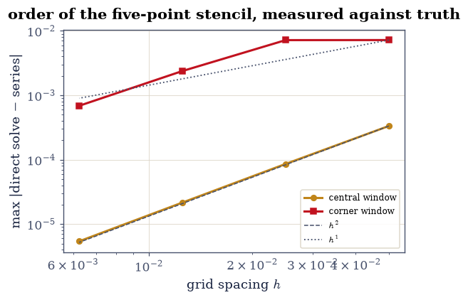
Fig. 338 Convergence of the five-point direct solve of §3.4 against the separated series derived in Exercise 3, on grids of spacing \(h=1/(N-1)\) with \(N=21,41,81,161\). The maximum deviation on a corner-free central window (amber) falls with fitted order \(\approx 2\), the truncation order of the stencil Eq. eq-stencil; on a window pressed against a top corner (red), where the boundary data jumps and the exact potential is singular, the same solver converges at roughly first order and with a hundredfold larger error. Dashed lines show pure \(h^2\) and \(h^1\) slopes for reference.#
Validation 4#
✓ the §3.4 relaxation reproduces its published agreement against the DERIVED series, and the direct solve converges at second order away from the singular corners [Jacobi error 2.36e-03 (§3.4 validated at 5e-3), central order 1.98, corner order 1.18]
True
Exercise 5 — Spherical separation, and where the integers \(l\) come from#
The second loop, and the one §3.5 named explicitly when it wrote that the origin of the Legendre polynomials and the spherical harmonics “is separation of variables of Laplace’s equation in spherical coordinates, a Sturm–Liouville problem” that it was deferring. Here is that problem.
For an azimuthally symmetric potential the ansatz is \(\varphi(r,\theta)=R(r)\,\Theta(\theta)\) (Fig. 339). Substituting into \(\nabla^2\varphi=0\) in spherical coordinates and multiplying by \(r^2/(R\Theta)\) isolates an \(r\)-dependent group against a \(\theta\)-dependent one, so each is a constant, and it is conventional (and, as we are about to see, correct) to write that constant as \(l(l+1)\). The radial factor then obeys Eq. 322, an Euler equation whose two independent solutions are the power laws \(r^{\,l}\) and \(r^{-(l+1)}\). The angular factor, written in \(x=\cos\theta\), obeys Legendre’s equation Eq. 321, which is already in Sturm–Liouville form with \(p=1-x^2\), \(q=0\), \(w=1\) and \(\lambda=l(l+1)\).
That \(p\) is the whole story. It vanishes at \(x=\pm1\), the north and south poles, so the problem is singular there and the theory imposes no boundary condition: the flux \(p\,\Theta'\) is zero at the ends for any bounded \(\Theta\), which is the “natural” endpoint of Exercise 2. Nothing has been assumed about \(l\) at this point, and the striking fact is that the spectrum comes out at the integers anyway. Solutions of Eq. 321 for non-integer \(l\) exist, but they blow up logarithmically at a pole; demanding only that \(\Theta\) stay finite on the sphere selects \(l=0,1,2,\dots\) and with them the polynomials \(P_l\). Our discretization inherits this for free, because a bounded eigenvector is all a finite matrix can produce, so running the machine of Exercise 2 with \(p=1-x^2\) and no boundary condition should return \(\lambda = 0, 2, 6, 12, 20, 30\) and nothing else.
Part a) Confirm the radial half of the split: for \(R=r^{\,l}\) and \(R=r^{-(l+1)}\),
sample \(r\in[1,3]\) at \(4001\) points, differentiate twice with numpy.gradient applied
to its own output, and check \(r^2R''+2rR'-l(l+1)R=0\) for \(l=1,2,3\) on both branches and
for \(l=0\) on the decaying branch, dropping the five outermost samples. Report each
residual relative to \(\max(|r^2R''|+|2rR'|)\). The \(l=0\) growing branch is the constant
and is trivially harmonic, so it is left out of the relative measure; its partner
\(R=1/r\) is the Coulomb potential of a point charge, which is the monopole term of
§3.5 arriving as the lowest separated solution.
Part b) Confirm the angular half: for \(l=1,\dots,5\), take \(P_l\) from
scipy.special.eval_legendre on \(x\in[-0.95,0.95]\) at \(6001\) points (staying off the
singular endpoints), form \((1-x^2)P_l'\) with numpy.gradient, differentiate again, and
check that it equals \(-l(l+1)P_l\). Report the residual relative to
\(\max|l(l+1)P_l|\).
Part c) Run sl_eigenproblem with \(p(x)=1-x^2\), \(q=0\), \(w=1\) on \([-1,1]\), \(400\)
cells, and bc=("natural", "natural"), and solve with scipy.linalg.eigh(A, B). Check
the six lowest eigenvalues against \(l(l+1)=0,2,6,12,20,30\), and the corresponding
eigenvectors against \(P_l\) sampled at the cell centres, each peak-normalised and
sign-fixed as in Exercise 2 (Fig. 340). Nothing in the input mentions
integers.
Part d) Confirm the orthogonality relation Eq. 218 that
§3.5 quoted as “a Sturm–Liouville consequence”: with
numpy.trapezoid on \(20\,001\) points of \([-1,1]\), check
\(\int_{-1}^{1}P_mP_n\,dx = 0\) for all \(m\ne n\) up to \(l=5\) and
\(\int_{-1}^{1}P_l^2\,dx = 2/(2l+1)\). It is Eq. 318 with \(w=1\), and it is the
reason a multipole moment can be extracted by a single integral.
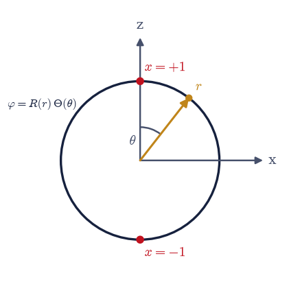
Fig. 339 Spherical separation of Laplace’s equation. A field point is located by the radius \(r\) and the polar angle \(\theta\) measured from the symmetry axis \(\hat{\mathbf z}\), and the azimuthally symmetric potential separates as \(\varphi=R(r)\Theta(\theta)\): the radial factor is a power law \(r^{l}\) or \(r^{-(l+1)}\), and the angular factor \(\Theta\) obeys Legendre’s equation in \(x=\cos\theta\). The two poles \(x=\pm1\) (red) are the singular endpoints at which the coefficient \(p=1-x^2\) vanishes, so no boundary condition is imposed there and mere boundedness quantizes \(l\) to the integers.#
radial: worst relative residual of r²R''+2rR'−l(l+1)R = 2.13e-06
angular: worst relative residual of Legendre's equation = 4.19e-06
l : λ (computed) l(l+1) max |eigvec − P_l|
0 : 0.0000000000 0.0 2.90e-13
1 : 2.0000000000 2.0 2.19e-13
2 : 6.0000000000 6.0 4.73e-06
3 : 12.0000000000 12.0 2.15e-05
4 : 20.0000000000 20.0 6.32e-05
5 : 30.0000000000 30.0 1.48e-04
orthogonality: worst |∫P_mP_n dx| for m≠n = 3.50e-08
normalisation: worst |∫P_l² dx − 2/(2l+1)| = 5.00e-08
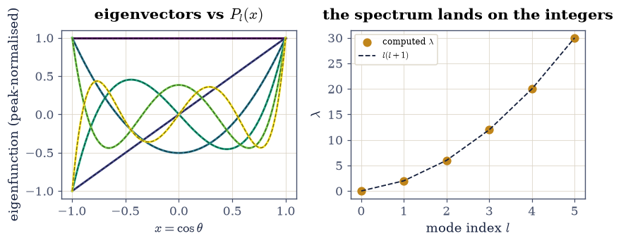
Fig. 340 Legendre’s equation solved as a singular Sturm–Liouville eigenproblem, with \(p=1-x^2\), \(q=0\), \(w=1\) on \([-1,1]\) and no boundary condition at either pole. Left: the six lowest eigenvectors (solid, peak-normalised) lying on the Legendre polynomials \(P_l(x)\) from scipy.special.eval_legendre (dashed), where \(x=\cos\theta\). Right: the computed eigenvalues against the mode index \(l\), falling on \(l(l+1)\) (dashed); the integers are an output of the calculation, forced by boundedness at the poles rather than by any condition imposed there.#
Validation 5#
✓ spherical separation gives power-law radial solutions and Legendre's equation, whose singular endpoints quantize λ to l(l+1) with the P_l as eigenfunctions and ∫P_mP_n dx = 2δ/(2l+1) [radial 2.1e-06, angular 4.2e-06, |λ−l(l+1)| 2.9e-12, modes 1.5e-04, orthogonality 3.5e-08, norm 5.0e-08]
True
Exercise 6 — The multipole expansion, derived as an eigenfunction expansion#
With the eigenfunctions in hand, the multipole expansion of §3.5 follows from a boundary condition and one integral. Outside a bounded charge distribution the potential is harmonic, so it is a superposition of the separated solutions of Exercise 5, \(\sum_l (A_l r^{\,l} + B_l r^{-(l+1)})P_l(\cos\theta)\). The requirement that \(\varphi\to0\) as \(r\to\infty\) kills every growing branch, \(A_l=0\), and leaves exactly Eq. 323. Where §3.5 obtained that form by expanding the Coulomb kernel in its generating function Eq. 216, here it is forced by the geometry: the \(P_l\) because the poles are singular endpoints, the \(r^{-(l+1)}\) because the potential dies at infinity.
The coefficients follow because the \(P_l\) are orthogonal. On any sphere \(r=R\) lying entirely outside the sources, Eq. 323 reads \(\varphi(R,\theta)=\sum_l \big(B_l/R^{\,l+1}\big)P_l(x)\) with \(x=\cos\theta\), which is an eigenfunction expansion of the surface data with coefficients \(B_l/R^{\,l+1}\). Project with Eq. 319 at unit weight and multiply back:
The test source is the simplest one with every moment non-zero: a single point charge \(q=2\,\)nC sitting on the axis at \(z=d=0.05\,\)m (Fig. 341), whose exact potential is \(\varphi(r,\theta)=kq/\sqrt{r^2+d^2-2rd\cos\theta}\) with \(k=1/4\pi\varepsilon_0\). Its moments are known in closed form. Expanding the square root, or simply reading Eq. 216 at \(t=d/r\), gives \(B_l = k\,q\,d^{\,l}\): the monopole \(kq\) (total charge \(q\)), the dipole \(kqd\) (moment \(p=qd\), since the charge sits a distance \(d\) off the origin), the quadrupole \(kqd^2\), and so on, which is Eq. 217 term by term. Note what this means physically: a point charge has an infinite tower of non-zero multipole moments purely because we chose an origin it does not sit on, and the moments are properties of the distribution and that choice.
Every projection below is numpy.trapezoid on \(20\,001\) uniform samples of
\(x=\cos\theta\in[-1,1]\), with \(P_l\) from scipy.special.eval_legendre.
Part a) Sample the exact potential on the sphere \(R=3d=0.15\,\)m and project it onto
\(P_l\) for \(l=0,\dots,20\) with the sl_project of Exercise 3 at unit weight, converting
each coefficient to \(B_l\) by the factor \(R^{\,l+1}\). Compare \(B_l\) against
\(k\,q\,d^{\,l}\) for \(l\le6\) and report the worst relative deviation. Name the first
three against §3.5: \(B_0/k=q\), \(B_1/k=qd\), \(B_2/k=qd^2\).
The accuracy degrades steadily with \(l\), from \(4\times10^{-10}\) at \(l=0\) to a few parts
in \(10^{4}\) by \(l=6\), and that is not the physics failing: \(P_l\) oscillates \(l\) times
across \([-1,1]\), so a fixed trapezoidal grid resolves each successive integrand a little
worse. It is the same floor the reconstruction of Part b flattens onto.
Part b) Reconstruct the potential on a different sphere, \(R'=5d=0.25\,\)m, from those moments, adding one term at a time, and record the maximum error over \(401\) polar angles relative to the peak exact potential (Fig. 342). The truncation error should fall geometrically like \((d/R')^{\,l}=0.2^{\,l}\) until it reaches the projection’s own accuracy floor near \(10^{-8}\), and the full \(l\le20\) reconstruction should agree with the exact Coulomb potential to better than \(10^{-6}\) relative.
Part c) State the ratio between successive terms measured from the data
(fit \(\log(\text{error})\) against \(l\) over the range \(l=2\dots8\) with
numpy.polyfit, then exponentiate the slope) and compare it with \(d/R'=0.2\). This is
why the multipole series is useful: each moment costs one integral and buys a factor of
five.
Dropping the axial symmetry adds an azimuthal factor \(e^{im\phi}\), whose own Sturm–Liouville problem on \([0,2\pi)\) with periodic conditions gives eigenvalues \(m^2\); combining it with the polar factor produces the spherical harmonics \(Y_l^m\) Eq. 219 that §3.5 used, with the same eigenvalue \(l(l+1)\) and a second index. The machinery is unchanged.
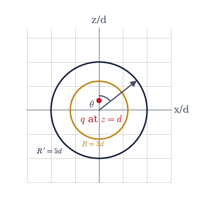
Fig. 341 The test source for the multipole derivation: a point charge \(q=2\,\)nC on the symmetry axis at height \(d=0.05\,\)m above the origin, with the polar angle \(\theta\) measured from that axis. The potential is sampled on the inner sphere of radius \(R=3d\) (amber) and projected onto the Legendre polynomials to obtain the moments \(B_l\), then reconstructed on the outer sphere of radius \(R'=5d\) (dark) and compared with the exact Coulomb potential there; both spheres lie entirely outside the source, which is what licenses the exterior expansion of Eq. eq-sov-exterior.#
B₀/k = 2.000000e-09 C vs q = 2.000000e-09 C
B₁/k = 1.000000e-10 C·m vs qd = 1.000000e-10 C·m
B₂/k = 5.000001e-12 C·m² vs qd² = 5.000000e-12 C·m²
worst relative deviation of B_l from k q d^l, l ≤ 6: 1.90e-04
relative error of the l ≤ 20 reconstruction at R' = 5d: 5.73e-08
measured term ratio 0.198 vs d/R' = 0.200
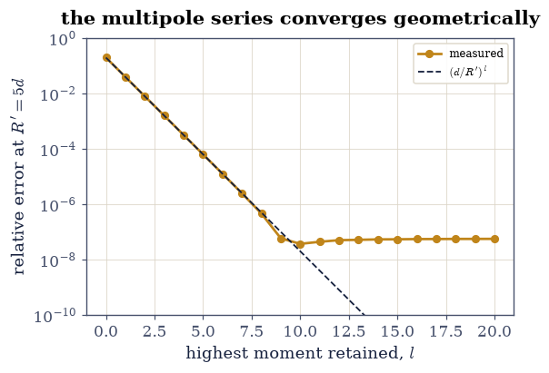
Fig. 342 Convergence of the derived multipole series for a point charge at height \(d\) on the axis, evaluated on the sphere \(R'=5d\). The relative error of the truncated reconstruction (amber) falls geometrically with the number of retained moments \(l\), on the predicted envelope \((d/R')^{l}=0.2^{\,l}\) (dashed), until it flattens near \(10^{-8}\) at the accuracy floor of the trapezoidal projection used to extract the moments. Each additional moment costs one integral and buys a factor of five in accuracy.#
Validation 6#
✓ projecting the exterior potential onto the Legendre eigenbasis returns the §3.5 multipole moments k q d^l, and the reconstruction converges at the rate d/R' [worst moment deviation 1.9e-04, reconstruction error 5.7e-08, measured ratio 0.198 vs 0.200]
True
Exercise 7 — Deriving the cavity modes#
The third loop. §3.9 computed the resonances of a rectangular microwave cavity from the formula Eq. 242, and its Setup cell recorded that the formula was “read off, not derived here”. It is three applications of Exercise 2.
Inside a hollow perfect conductor a field of fixed frequency obeys the Helmholtz equation \(\nabla^2\psi = -k^2\psi\) with \(k=\omega/c\), and the tangential electric field vanishes on every wall. The box \(a\times b\times d\) has six walls, each a coordinate plane, so the ansatz applies in the strong form \(\psi = X(x)Y(y)Z(z)\). Dividing by \(\psi\) gives \(X''/X + Y''/Y + Z''/Z = -k^2\), three groups of independent variables summing to a constant, so each is separately constant and the three constants add. Each factor is then the same one-dimensional problem solved in Exercise 2, on its own interval with Dirichlet ends, contributing \((m\pi/a)^2\), \((n\pi/b)^2\), \((p\pi/d)^2\). Adding them gives Eq. 325, and \(f=ck/2\pi\) turns it into the frequency Eq. 242. Confinement in each direction independently quantizes one term of the sum: that is the whole content of a resonance condition, and it is why a cavity rings at a discrete comb rather than a continuum.
The cavity is the one §3.9 used (Fig. 343): the WR-90 cross-section \(a=22.9\,\)mm, \(b=10.2\,\)mm, closed at length \(d=30\,\)mm. A triple \((m,n,p)\) with two zero indices carries an identically zero field and is not a mode.
Part a) Run sl_eigenproblem three times, once per axis, with \(p=1\), \(q=0\), \(w=1\),
Dirichlet at both ends, \(400\) cells, on \([0,a]\), \([0,b]\) and \([0,d]\) respectively, and
solve each with scipy.linalg.eigh(A, B). Confirm the lowest eigenvalue along each axis
is \((\pi/a)^2\), \((\pi/b)^2\), \((\pi/d)^2\) to better than \(10^{-4}\) relative. Nothing
about this is new physics: it is the point that the box eigenproblem is the segment
eigenproblem, three times.
Part b) Add the computed separation constants to form \(k^2\) for the modes
\((1,0,1)\), \((1,1,1)\) and \((1,0,2)\), convert with \(f=ck/2\pi\), and compare against
cavity_freq from Setup, which is Eq. 242 exactly as
§3.9 transcribed it. The fundamental \(f_{101}\) should come
out near \(8.24\,\)GHz.
Part c) Check that a separated field really solves the equation in three dimensions: sample \(\psi_{101}=\sin(\pi x/a)\sin(\pi z/d)\) on a \(41\times25\times53\) uniform grid filling the cavity, apply the seven-point Laplacian (the three-dimensional counterpart of Eq. 207: the six face neighbours minus six times the centre, each axis divided by its own spacing squared) on the interior, and compare with \(-k^2\psi_{101}\). Expect agreement at the \(10^{-3}\) level, the stencil’s \(O(h^2)\) truncation.
Part d) Read the fundamental two ways and check they agree: \(f_{101}^2 = f_c(\mathrm{TE}_{10})^2 + (c/2d)^2\), with \(f_c(\mathrm{TE}_{10})=c/2a\) the guide cutoff Eq. 240 of §3.9. A cavity resonance is a guided mode standing between the end walls, and the Pythagorean form is just Eq. 325 regrouped.
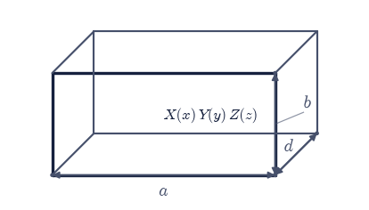
Fig. 343 The rectangular cavity of §3.9 (\(a=22.9\,\)mm, \(b=10.2\,\)mm, \(d=30\,\)mm) in oblique view, with all six walls perfectly conducting. Every wall is a coordinate plane, so the Helmholtz equation separates as \(\psi=X(x)Y(y)Z(z)\) and each axis contributes its own separation constant \((m\pi/a)^2\), \((n\pi/b)^2\), \((p\pi/d)^2\); the three add to \(k^2\), which is Eq. eq-sov-cavity, and the indices \(m,n,p\) count half-waves along the corresponding edge.#
axis of length 22.9 mm: λ₁ = 18820.30 m⁻² vs (π/L)² = 18820.40 m⁻² (rel 5.1e-06)
axis of length 10.2 mm: λ₁ = 94863.07 m⁻² vs (π/L)² = 94863.56 m⁻² (rel 5.1e-06)
axis of length 30.0 mm: λ₁ = 10966.17 m⁻² vs (π/L)² = 10966.23 m⁻² (rel 5.1e-06)
mode (1,0,1): summed separation constants give 8.2347 GHz vs the §3.9 formula 8.2348 GHz
mode (1,1,1): summed separation constants give 16.8456 GHz vs the §3.9 formula 16.8456 GHz
mode (1,0,2): summed separation constants give 11.9459 GHz vs the §3.9 formula 11.9460 GHz
3-D Helmholtz residual for ψ₁₀₁, relative: 4.37e-04
f₁₀₁ = 8.2348 GHz vs sqrt(f_c(TE₁₀)² + (c/2d)²) = 8.2348 GHz with f_c(TE₁₀) = 6.5457 GHz
Validation 7#
✓ separating Helmholtz in the box gives one Dirichlet eigenproblem per axis whose separation constants add to the §3.9 cavity formula, and the resonance decomposes into a guide cutoff plus a longitudinal half-wave [worst axis error 5.1e-06, worst frequency error 8.0e-06, 3-D residual 4.4e-04, Pythagorean form 1.1e-16]
True
Exercise 8 — Cylindrical separation, and a weight that cannot be dropped#
Round the corners of the guide and the same three steps run again in cylindrical coordinates, with one new feature that the first two cases hid. Separating \(\nabla_T^2\psi = -k^2\psi\) on a disc of radius \(a\) as \(\psi = R(r)\,e^{im\phi}\) (Fig. 344) sends the azimuthal factor to its own Sturm–Liouville problem on \([0,2\pi)\) with periodic conditions, whose eigenvalues are \(m^2\) with \(m\) an integer (single-valuedness is the boundary condition), and leaves the radial factor obeying Bessel’s equation Eq. 324. In Sturm–Liouville form that is \(p=r\), \(q=m^2/r\), \(w=r\), and \(\lambda=k^2\).
The new feature is \(w=r\). In the Cartesian and Legendre cases the weight was \(1\), so it could be ignored without anyone noticing; here it is the polar area element \(r\,dr\,d\phi\), and eigenfunctions belonging to different \(k\) are orthogonal only with it. This is the clearest place in the course to see that Eq. 318 genuinely needs \(w\): the same integrals taken without the weight are not small, they are of order \(10^{-2}\), and an expansion built on them would be wrong.
The endpoints are also the two kinds side by side. At \(r=0\) the coefficient \(p=r\)
vanishes, so the endpoint is natural and no condition is imposed: that is exactly what
discards the second solution \(Y_m\), which diverges logarithmically at the axis, and
keeps \(J_m\). At \(r=a\) the conducting wall imposes \(R(a)=0\), a Dirichlet condition, which
quantizes \(k\) to \(k_{mn}=j_{m,n}/a\) with \(j_{m,n}\) the \(n\)-th positive zero of \(J_m\)
(scipy.special.jn_zeros). The TM cutoffs of a circular guide, the cylindrical
counterpart of the sine-product cutoffs Eq. 239 of
§3.9, are then \(f_c = c\,j_{m,n}/(2\pi a)\)
Eq. 240.
Part a) Verify Bessel’s equation in the Sturm–Liouville form
Eq. 324 numerically: for \(m=0,1,2\) and the first three zeros of each, sample
\(R(r)=J_m(j_{m,n}r)\) on \(r\in[0.01,1]\) at \(20\,001\) points with scipy.special.jv, form
\(r\,R'\) with numpy.gradient, differentiate again, and check that it equals
\(-(k^2r - m^2/r)R\) with \(k=j_{m,n}\). Report the residual relative to
\(\max|k^2 r R|\), excluding the first 200 samples where the \(m^2/r\) term is stiff.
Part b) Run sl_eigenproblem a third time, now with \(p(r)=r\), \(q(r)=m^2/r\),
\(w(r)=r\) on \([0,1]\), \(400\) cells, and bc=("natural", "dirichlet"), for \(m=0,1,2\).
Solve with scipy.linalg.eigh(A, B) and compare \(\sqrt{\lambda_n}\) against
scipy.special.jn_zeros(m, 4). sl_eigenproblem, the one function that produced
\((n\pi)^2\) in Exercise 2 and \(l(l+1)\) in Exercise 5, now produces the Bessel zeros,
with only \(p\), \(q\), \(w\) changed (Fig. 345).
Part c) Make the weight visible. On \(r\in[0,1]\) at \(40\,001\) points, take all six
pairs \(i\ne j\) from the first four \(m=1\) modes and compute
\(\int_0^1 J_1(j_{1,i}r)J_1(j_{1,j}r)\,r\,dr\) and \(\int_0^1 J_1(j_{1,i}r)J_1(j_{1,j}r)\,dr\),
the same overlap stripped of the factor \(r\), both with numpy.trapezoid. The weighted
ones should vanish to round-off and the unweighted ones should not. Confirm the
weighted norm with the same numpy.trapezoid call against its closed form
\(\int_0^1 J_m(j_{m,n}r)^2 r\,dr = \tfrac12 J_{m+1}(j_{m,n})^2\), evaluating
\(J_{m+1}(j_{m,n})\) with scipy.special.jv.
Part d) Convert to physics: for a circular guide of radius \(a=12\,\)mm, compute the TM\(_{0n}\) cutoffs \(f_c = c\,j_{0,n}/(2\pi a)\) for \(n=1,2,3\) and compare the dominant one with the TE\(_{10}\) cutoff \(c/2a_{\rm WR90}=6.546\,\)GHz of the rectangular WR-90 guide of §3.9. The two geometries are the same eigenvalue problem with different \(p\), \(q\), \(w\), and their cutoffs differ only through the eigenvalues.
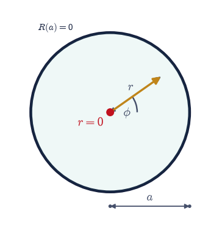
Fig. 344 The circular waveguide cross-section of radius \(a=12\,\)mm, with the conducting wall (dark) on which the longitudinal field vanishes. A field point is located by the polar radius \(r\) and azimuth \(\phi\), and the transverse Helmholtz equation separates as \(\psi=R(r)e^{im\phi}\): the azimuthal factor is quantized to integer \(m\) by single-valuedness, and the radial factor obeys Bessel’s equation with the Sturm–Liouville weight \(w(r)=r\), the polar area element. The axis \(r=0\) (red) is the singular endpoint where the coefficient \(p=r\) vanishes, which is what discards \(Y_m\) and keeps \(J_m\).#
Bessel equation: worst relative residual over m=0,1,2 = 1.02e-07
m=0: √λ = 2.40482, 5.52004, 8.65356, 11.79111 vs j_(m,n) = 2.40483, 5.52008, 8.65373, 11.79153 (rel 3.6e-05)
m=1: √λ = 3.83170, 7.01553, 10.17326, 13.32319 vs j_(m,n) = 3.83171, 7.01559, 10.17347, 13.32369 (rel 3.8e-05)
m=2: √λ = 5.13561, 8.41716, 11.61958, 14.79536 vs j_(m,n) = 5.13562, 8.41724, 11.61984, 14.79595 (rel 4.0e-05)
weighted ∫J₁J₁ r dr, worst |value| for i≠j: 5.20e-18
unweighted ∫J₁J₁ dr, smallest |value| for i≠j: 1.15e-02
weighted norm vs ½J_(m+1)(j)², worst deviation: 8.33e-17
circular guide a=12 mm, TM₀1 cutoff: 9.562 GHz
circular guide a=12 mm, TM₀2 cutoff: 21.948 GHz
circular guide a=12 mm, TM₀3 cutoff: 34.408 GHz
rectangular WR-90, TE₁₀ cutoff: 6.546 GHz
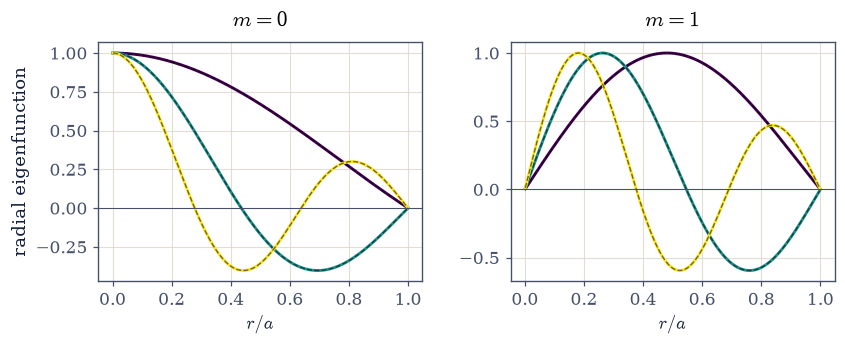
Fig. 345 Bessel’s equation solved by the same Sturm–Liouville machine used for the Cartesian and Legendre cases, with \(p(r)=r\), \(q(r)=m^2/r\), \(w(r)=r\) on \([0,1]\), natural at the axis and Dirichlet at the wall. Left: the three lowest radial eigenvectors for \(m=0\) (solid, peak-normalised) on \(J_0(j_{0,n}r)\) from scipy.special.jv (dashed), with \(j_{0,n}\) the Bessel zeros; each mode vanishes at the wall \(r=1\) and stays finite on the axis. Right: the same for \(m=1\), where the \(m^2/r\) term pushes every mode away from the axis.#
Validation 8#
✓ the cylindrical case is the same Sturm–Liouville problem with p=r, q=m²/r, w=r: the eigenvalues are the squared Bessel zeros, and orthogonality holds with the weight r and fails without it [equation residual 1.0e-07, zeros 4.0e-05, weighted overlap 5.2e-18, unweighted overlap 1.1e-02, norm 8.3e-17]
True
Exercise 9 — How the expansion converges, and where it refuses to#
Completeness Eq. 319 guarantees that the eigenfunction series converges to the data, but it does not say the convergence is uniform, and at a jump it is not. The top edge of the box carries a discontinuous datum: \(\varphi = V_0\) along the edge and \(0\) on the side walls meeting it, so at each top corner the boundary value jumps. Every partial sum of Eq. 320 evaluated on that edge overshoots the jump by a fixed fraction that does not shrink as terms are added; it only migrates closer to the corner and gets narrower. That is the Gibbs phenomenon, and its size is the universal constant Eq. 326: for a jump of size \(\Delta\) the partial sums reach \((\Delta/2)(2/\pi)\mathrm{Si}(\pi) = 1.178980\,(\Delta/2)\) above the midpoint, an overshoot of \(8.95\%\) of \(\Delta\). It is a property of the jump rather than of the basis, so it appears identically in a Legendre series.
The odd extension of the top-edge datum is the square wave stepping from \(-V_0\) to \(+V_0\) at \(x=0\) and back at \(x=1\), so \(\Delta = 2V_0\) and the partial sums should reach \(1.178980\,V_0\). Away from a jump the story reverses completely and the series is superb: in the interior at height \(y\) the \(n\)-th term of Eq. 320 carries a factor \(e^{-n\pi(1-y)}\), so the truncation error is essentially the first neglected term and dies geometrically.
Take \(\mathrm{Si}(\pi)\) from scipy.special.sici(np.pi)[0], and evaluate every partial
sum on \(200\,001\) uniform samples of \(x\in[0,1]\) so the narrow late-\(N\) spike is
resolved.
Part a) For \(N = 11, 51, 201, 1001\) form
\(S_N(x)=\sum_{n\ \mathrm{odd}}^{N} (4V_0/n\pi)\sin(n\pi x)\) and take its maximum over
\(x>0.5\) with numpy.argmax (restricting to the right half picks out one of the two
symmetric corners deterministically). Confirm the maxima approach
\((2/\pi)\mathrm{Si}(\pi)V_0 = 1.178980\,\)V and do not approach \(V_0\)
(Fig. 346).
Part b) Record where each maximum sits. The distance from the jump, \(|1-x_{\max}|\), should track \(1/(N+1)\) to within the sample spacing: the overshoot narrows in proportion to the shortest wavelength retained, which is why it disappears from any plot of a converged field yet never from the partial sums.
Part c) Show that this is compatible with convergence: compute the \(L^2\) error
\(\big(\int_0^1 (S_N-V_0)^2 dx\big)^{1/2}\) with numpy.trapezoid for the same \(N\) and
fit \(\log\) error against \(\log N\) with numpy.polyfit. The slope should come out near
\(-1/2\): the series converges in the mean while failing to converge uniformly, because
the overshoot is getting thinner even though it is not getting shorter.
Part d) Confirm the constant is a property of the jump and not of the sines. Expand
the split-shell datum \(f(x)=\mathrm{sign}(x)\) on \([-1,1]\), the surface potential of a
sphere held at \(+V_0\) on its northern hemisphere and \(-V_0\) on its southern, in Legendre
polynomials using sl_project at unit weight, and evaluate the partial sums to
\(L = 10, 50, 150\) on \(40\,001\) samples. The maximum should climb to the same
\(1.178980\).
Part e) Then the good news. For the interior of the box at \(y=0.5\) and \(y=0.95\),
compute \(\max_x|S_N(x,y) - S_{2001}(x,y)|\) for \(N=5,11,21,41\) using the box_potential
of Exercise 3 with the coefficients truncated at \(N\). At \(y=0.5\) the error should fall
from about \(3\times10^{-6}\) to below \(10^{-16}\) and agree with the first neglected term
\(\big(4V_0/(N{+}2)\pi\big)e^{-(N+2)\pi(1-y)}\) to a few percent; at \(y=0.95\), only
\(0.05\) away from the discontinuous edge, the same four truncations are still at the
\(10^{-4}\) level. Distance from the jump is what buys convergence.
With your assistant
Ask your assistant to produce the figure for Part a: the four partial sums
\(S_{11}, S_{51}, S_{201}, S_{1001}\) over \(x\in[0.9,1]\) on one pair of axes, with a
horizontal line at \(V_0\) and another at \(1.178980\,V_0\). Then run the check yourself:
read the peak of each curve off your own array with numpy.max and confirm the four
numbers are not converging to \(V_0\) but to the Gibbs constant, and that the peak of
\(S_{1001}\) sits about a thousandth of the interval from the edge. The check is yours.
Gibbs constant (2/π)·Si(π) = 1.178980
N max S_N 1 − x_peak 1/(N+1) L² error
11 1.181302 0.083335 0.083333 0.1836
51 1.179103 0.019230 0.019231 0.0883
201 1.178988 0.004950 0.004950 0.0448
1001 1.178976 0.001000 0.000998 0.0201
L² error slope d log ε / d log N = -0.491 (mean-square convergence)
Legendre partial sums of the split shell reach 1.24609, 1.17930, 1.17884 (L = 10, 50, 150)
y N=5 N=11 N=21 N=41
0.50 3.146e-06 1.375e-10 1.388e-17 0.000e+00
0.95 1.264e-01 3.297e-02 4.454e-03 1.132e-04
first neglected term at y=0.5, N=5: 3.051e-06 vs measured 3.146e-06 (rel 0.03)
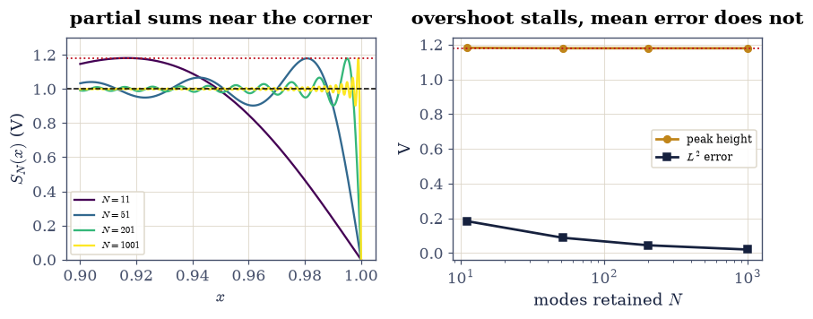
Fig. 346 The Gibbs phenomenon in the box series. Left: the partial sums \(S_N(x)\) of the top-edge datum near the corner \(x=1\), for \(N=11,51,201,1001\) retained modes; the dashed line is the datum \(V_0=1\,\)V and the dotted line is \((2/\pi)\mathrm{Si}(\pi)V_0=1.17898\,\)V. The overshoot narrows towards the corner as \(N\) grows but never gets smaller. Right: the peak height (amber, flat at the Gibbs constant) beside the \(L^2\) error (dark, falling as \(N^{-1/2}\)), the two facts that make this a failure of uniform convergence and not of convergence.#
Validation 9#
✓ the eigenfunction expansion overshoots a jump by the universal factor (2/π)Si(π) in BOTH the sine and Legendre bases, converges in the mean at N^(-1/2), and away from the jump is governed by its first neglected term [peak 1.178976 vs 1.178980, offset 2.0e-03, L² slope -0.491, Legendre peak 1.17884, interior truncation 0.0e+00 at y=0.5 against 1.1e-04 at y=0.95]
True
Notebook summary#
The ansatz. Writing \(\varphi=X(x)Y(y)\) splits \(\nabla^2\varphi=0\) into \(X''=-k^2X\) and \(Y''=+k^2Y\) Eq. 316, one separation constant with opposite signs; the product modes \(\sin(n\pi x)\sinh(n\pi y)/\sinh(n\pi)\) are annihilated by the five-point Laplacian to \(4\times10^{-5}\) of their own curvature. Taking the same sign in both factors instead gives \(\nabla^2\psi=-2(n\pi)^2\psi\), the Helmholtz problem of §3.9: the two halves of this volume differ by one sign. The ansatz needs the boundary to be built from coordinate surfaces, which is exactly what the L-shaped guide and the general Dirichlet region are not.
One machine.
sl_eigenproblemdiscretizes \(-(pu')'+qu=\lambda wu\) Eq. 317 in conservative form, giving a matrix symmetric to the last bit (\(|A-A^{\mathsf T}|=0\)) and a \(B\)-orthonormal eigenbasis (\(|V^{\mathsf T}BV-I| = 1.3\times10^{-15}\)) — §0.5 for a differential operator. With \(400\) cells it returns \((n\pi)^2\) to \(5\times10^{-6}\) with eigenvectors equal to \(\sin(n\pi x)\) to \(10^{-13}\); with \(p=1-x^2\) and no boundary condition it returns \(l(l+1)=0,2,6,12,20,30\) to \(3\times10^{-12}\) with the \(P_l\) as eigenvectors; with \(p=w=r\) and \(q=m^2/r\) it returns the Bessel zeros \(j_{m,n}\) to \(4\times10^{-5}\). Three special-function families, one function, three sets of coefficients.Loop one, §3.4. Projecting the top-edge datum onto the sine eigenbasis gives \(c_n=4V_0/n\pi\) for odd \(n\) and \(0\) for even (quadrature reproduces the closed form to \(4\times10^{-7}\)), and the assembled series Eq. 320 matches the function §3.4 quoted exactly, to \(0\) in double precision. Graded against that derived truth, the Jacobi relaxation of that notebook reproduces its published \(2\times10^{-3}\) agreement in \(2212\) sweeps, and the sparse direct solve converges at fitted order \(1.98\) on a corner-free window against \(1.18\) pressed against a corner.
Loop two, §3.5. The exterior expansion Eq. 323 follows from discarding the growing branch of Eq. 322. Projecting the potential of a \(2\,\)nC charge at \(d=5\,\)cm onto the \(P_l\) on the sphere \(R=3d\) returns \(B_l=kqd^{\,l}\) (\(B_0/k=q\) exactly, \(B_1/k=qd\) exactly, worst deviation \(1.9\times10^{-4}\) through \(l=6\)), and reconstructing on a different sphere \(R'=5d\) matches the exact Coulomb potential to \(5.7\times10^{-8}\) with a measured term ratio of \(0.198\) against the predicted \(d/R'=0.2\). The orthogonality §3.5 attributed to Sturm–Liouville theory, \(\int P_mP_n\,dx=2\delta_{mn}/(2l+1)\), holds to \(5\times10^{-8}\).
Loop three, §3.9. Three Dirichlet eigenproblems, one per axis, each recovering \((\pi/L)^2\) to \(5\times10^{-6}\), add to Eq. 325; the resulting \(f_{101}=8.2347\,\)GHz agrees with the transcribed formula’s \(8.2348\,\)GHz, and the cavity resonance factors as \(f_{101}^2=f_c(\mathrm{TE}_{10})^2+(c/2d)^2\) with \(f_c=6.546\,\)GHz.
The weight is real. For the cylindrical problem \(\int_0^1 J_1J_1\,r\,dr\) vanishes to \(5\times10^{-18}\) between distinct modes while the unweighted integral is \(1.15\times10^{-2}\), and the weighted norm equals \(\tfrac12J_{m+1}(j_{m,n})^2\) to \(10^{-17}\). Orthogonality without \(w\) is simply false.
Convergence. At a jump the partial sums overshoot by the universal \((2/\pi)\mathrm{Si}(\pi)=1.178980\) Eq. 326, reached to four digits at \(N=1001\) in the sine basis and to \(1.17884\) at \(L=150\) in the Legendre basis, with the spike sitting \(1/(N{+}1)\) from the corner and the \(L^2\) error falling as \(N^{-0.491}\). Away from the jump the same series is superb: at \(y=0.5\) truncation at \(41\) modes is below \(10^{-16}\) and at \(5\) modes equals the first neglected term to \(3\%\), while at \(y=0.95\) the same truncation is still at \(10^{-4}\).
Outlook#
The other separable systems. Cartesian, spherical and cylindrical are three of eleven coordinate systems in which the Laplacian separates; prolate and oblate spheroidal coordinates handle a charged needle and a charged disc, and elliptic cylinder coordinates give the Mathieu functions. Each is a different \((p,q,w)\) for the same machine, which is a rather cheap way to acquire a shelf of special functions.
When separation fails. The L-shaped guide of §3.9 and any boundary that is not a coordinate surface need the sparse eigensolver instead, and the finite-element method generalises that to arbitrary shapes. The two approaches are complementary rather than rival: separation gives exact spectra on ideal geometries, and those spectra are how a numerical eigensolver is verified in the first place.
Non-uniform convergence, handled. Gibbs oscillations are a nuisance in spectral methods, and the standard cures (Fejér averaging, Lanczos sigma factors, filtered reconstruction) trade a little resolution for a monotone approximation. The same question returns as ringing in the Fourier-optics transfer functions of §3.14.
The quantum sequel. The angular eigenfunctions here are the angular hydrogen states, and the \(l(l+1)\) that came out of a singular Sturm–Liouville problem returns as the eigenvalue of \(\hat L^2\). More than the functions carry over: the whole framework does, since the spectral theorem for a self-adjoint operator, the reality of its eigenvalues and the completeness of its eigenfunctions, is the mathematical backbone of the postulates in §6.2. What is a convenience for solving Laplace’s equation becomes, there, the statement that measurable quantities are real and that any state can be expanded in the outcomes of a measurement.
References#
George B. Arfken, Hans J. Weber, and Frank E. Harris. Mathematical Methods for Physicists. Academic Press, 7 edition, 2013.
David J. Griffiths. Introduction to Electrodynamics. Cambridge University Press, 4 edition, 2017.
John David Jackson. Classical Electrodynamics. Wiley, 3 edition, 1998.
Wolfgang Nolting. Theoretical Physics 3: Electrodynamics. Springer, 2016.
William H. Press, Saul A. Teukolsky, William T. Vetterling, and Brian P. Flannery. Numerical Recipes: The Art of Scientific Computing. Cambridge University Press, 3 edition, 2007.